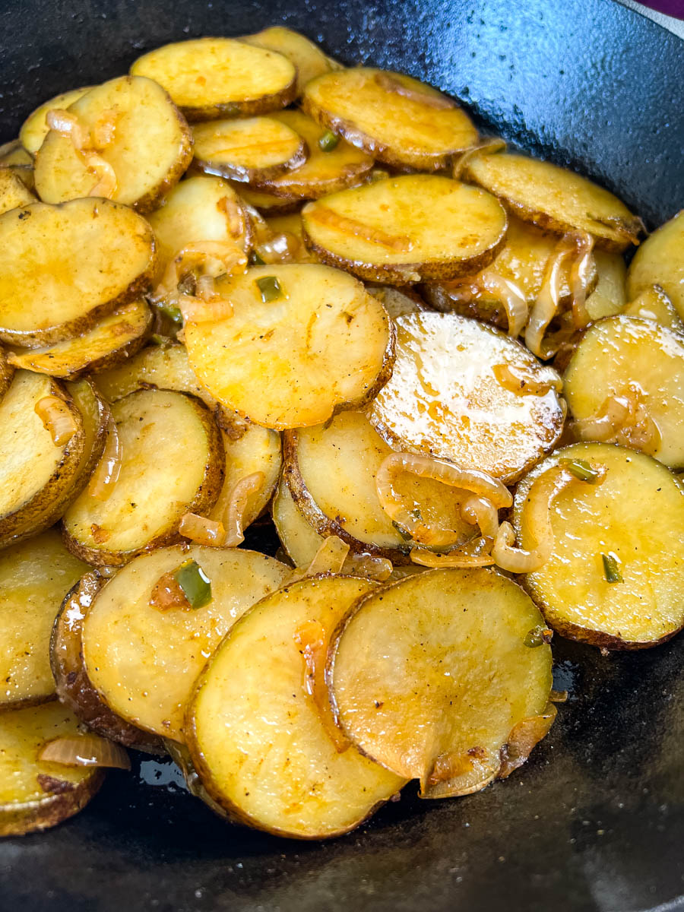

Fried potatoes

How to make fried potatoes
Prep time: 15 min
Cook time: 24 min
Ingredients
Steps
- Peel and cut the potatoes to desired size.
- Cut the onions
- Put a bit of Oil in your pan.
- Put both the potatoes and the onions into the pan.
- Cook them until they are golden-brown.